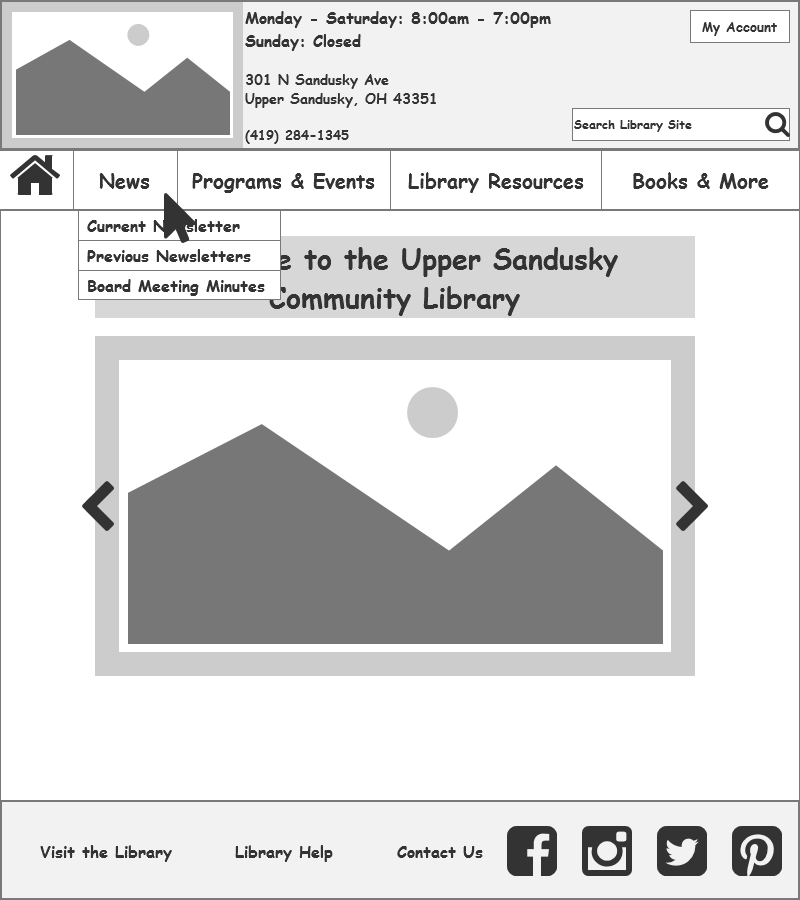
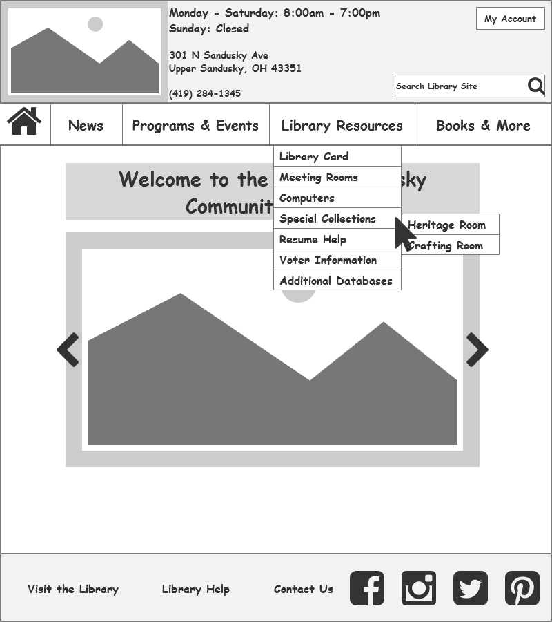

Library Website Redesign
results:
After thinking through and evaluating the needs of the library patrons for some time, I developed a focused hybrid organization scheme of topical and task-based organization and navigation to help library patrons utilize the Upper Sandusky Community Library - and librarians maintain the website for years to come with limited development resources.
Tools Used:
- Treejack: an information architecture testing tool to confirm information is where users expect to find it in a website's hierarchy. Used to test proposed naviation and information architecture.
- Chalkmark: a first-click testing tool to confirm information is where users expect it to be on a specific website page. Used to test and refine proposed website navigation and organization scheme.
- Visio to display proposed information architecture.
- Pencil and paper to sketch and iterate over ideas for page organization and information architecture.
- Axure RP to create wireframes for testing in Chalkmark.
Wireframes:
The following wireframes show the organization of the proposed new Upper Sandusky Community Library website. The vertical fly-out menu bars load on hover of the main global navigation option and load the first selection if the main global navigation is clicked itself, such as when “News” is clicked.
Showing the home page with on-hover of "News."

Showing the home page with on-hover of "Library Resources."

← Go back to review my steps to solve the problem.
After all the work, I'd like to share what I learned →.